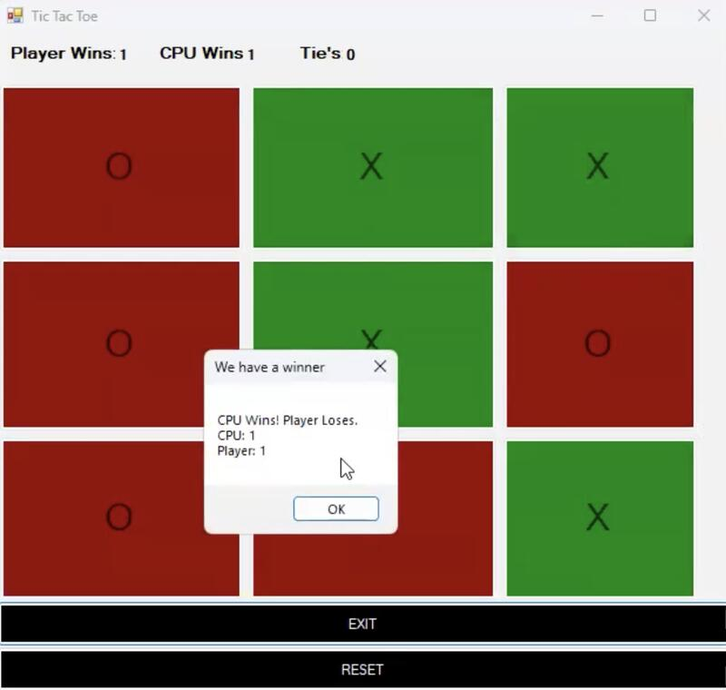

Undergraduate IT Student | Aspiring Project Manager
About Me
Hi, I'm Krish Juneja, an undergraduate IT student passionate about project management. I am eager to gain hands-on experience and contribute to innovative projects. I'm looking for an internship to further develop my technical and professional skills.
Interpersonal Skills
Team Collaboration – Engaging in project work and group activities to achieve shared goals.
Communication – Conveying technical and non-technical concepts effectively.
Adaptability – Demonstrating the ability to learn and work in new environments.
Problem-Solving – Addressing challenges effectively within projects.
Time Management – Balancing multiple skills and responsibilities, such as HTML, UX Design, and client projects.
Client Relationship Management – Managing client expectations and requirements while delivering a Wix website.
Initiative – Creating a personal portfolio and learning multiple skills.
Attention to Detail – Building structured and functional web pages while ensuring quality.
Project Management – Organizing, planning, and executing tasks related to website creation and client deliverables.
Eagerness to Learn – Demonstrating a willingness to expand skills across various domains, including programming and design.
HTML – Proficient in structuring web pages using HTML5.
Mircosoft 365 – Proficient in using Microsoft programs effectively.
Projects
Here are some of the projects I've worked on:
Personal Portfolio - This website you're currently viewing!
JSidhuCuts Website – Built a responsive and clean website for JSidhu Cuts using HTML, CSS, and JavaScript. I was primarily responsible for designing and structuring the HTML layout, ensuring the content was well-organized and user-friendly. Collaborated on styling and interactive features to enhance the overall user experience across devices.
Tic-Tac-Toe Game – Created a Tic Tac Toe game in Visual Studio Code using C#, featuring a graphical user interface for an engaging user experience. Developed the game logic, including win conditions and player turn management, to ensure smooth and responsive gameplay.

Skills
Skill
Proficiency
Experience
HTML
Beginner
3 Months
C#
Basic
3 Months
Network Security
Basic
3 Months
UX Design
Proficient
1 Year
Python
Basic
3 Months
University of Washington:
Contact
If you'd like to get in touch with me, you can reach me through the following: